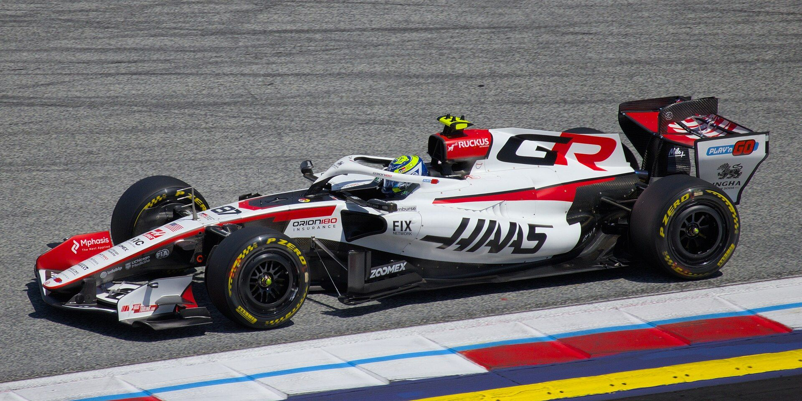
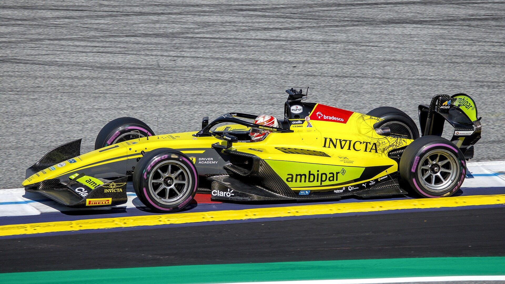
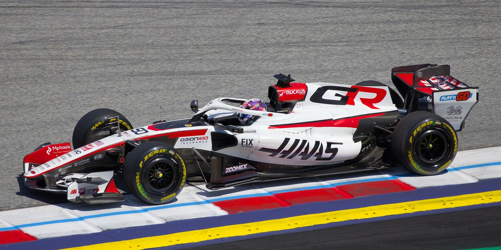

2026 FIA Formula One World Championship
Machinedto race.
01 · This week
Three to go.
Seventh to defend.
Next race · Round 21 of 23
Las VegasGrand Prix
Sat 21 Nov · 20:00 PST · Las Vegas Strip Circuit
- Length
- 6.201 km
- Laps
- 50
- Corners
- 17
- Type
- Street · night
Constructors’ Championship
P7
31 points · Audi 3 behind in eighth
After Round 20 · São Paulo
02 · Drivers
Who drives.
Bearman leads the scoring. With four drivers used this season, the limit, the second seat for the last three rounds goes to Hirakawa or Câmara.
Race driver · #87
OliverBearman
Fifth in Shanghai. Twenty-three of the team’s thirty-one points.
- 2026 points
- 23
- Championship
- P13
- Best finish
- P5

Race driver 2027 · #51
RafaelCâmara
Confirmed for 2027. Made his debut a season early, at home.
- F1 debut
- São Paulo 2026
- Debut result
- P20
- 2027
- Race seat

Reserve driver · #50
RyoHirakawa
One Grand Prix start. One point.
- GP starts
- 1
- Points
- 1
- Mexico City 2026
- P10
03 · The machine
VF-26
The first Haas built for Formula 1’s biggest rule change in a generation. Smaller and lighter, with wings that move and a power unit that makes close to half its power from electricity.
Drag to rotate

768kg
Minimum weight350kW
Electric power3400mm
Max wheelbase100%
Sustainable fuelX-ray, exploded view and active aero, in your browser.
04 · News
From the garage.
05 · Who we are
The smallest team on the grid. Built across three countries. Racing the biggest names in motorsport since 2016.
- First race
- 2016
- Best result
- P4
- Bases
- 3
08 · Partners
All partners- Toyota Gazoo Racing
- Haas Automation
- Ferrari
- Pirelli
- Castore
- D.Energy
- Singha
- Zoomex
- Ruckus Networks
- CommScope
- Exein
- Fix Network